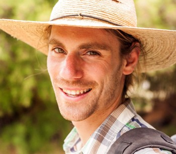
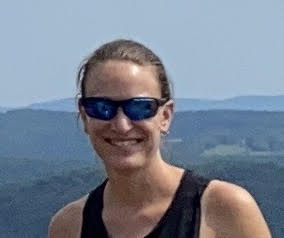
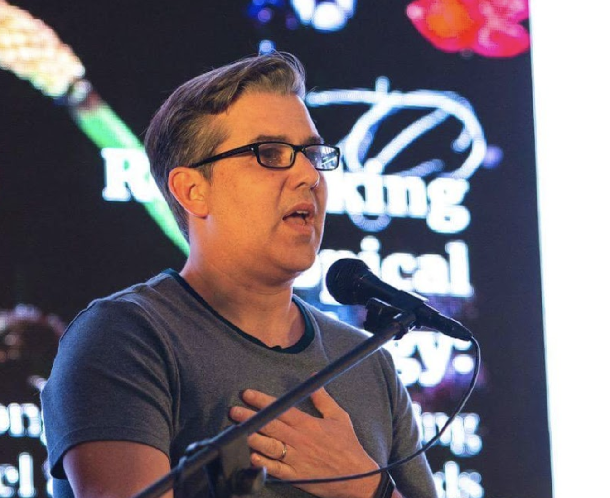
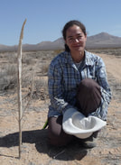
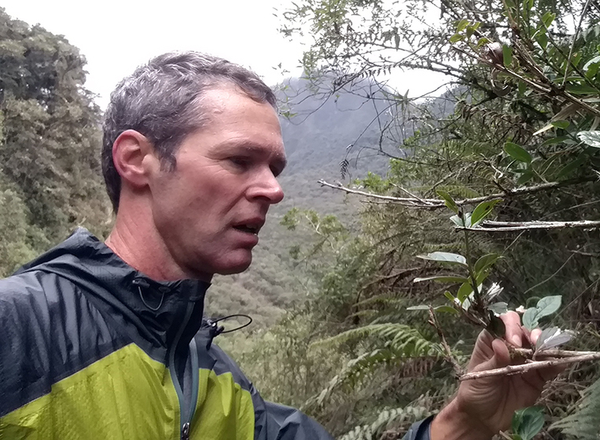
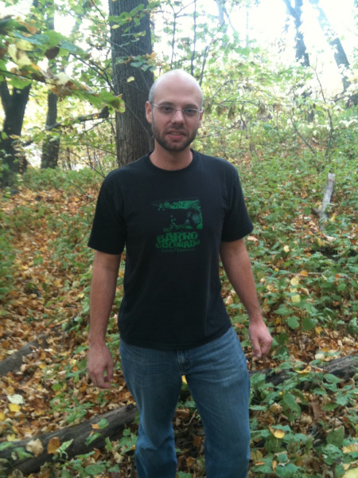
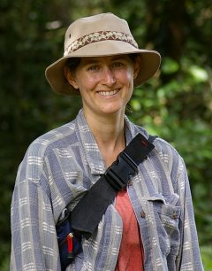
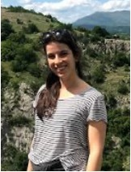

Leadership
HerbVar is led by a Steering Committee and multiple Subgroups that focus on specific topics. Please feel free to email herbvar(a)gmail.com or members of the Planning Group or Coordination Staff if you are interested in the project. For information on how our network runs, please see the HerbVar Document of Collaboration.
HerbVar is funded for 2022-2026 as a US National Science Foundation Research Coordination Network. As part of this, we are currently recruiting new members and organizing new committees and working groups.
HerbVar Steering Committee

Dr. Will Wetzel
Land Resources & Environmental Sciences
Montana State University
william.wetzel (a) montana.edu • website
(Lead PI, Asteraceae Coordinator)

Dr. Karen Abbott
Department of Biology
Case Western Reserve University
kcabbott (a) case.edu • website

Dr. Emilio Bruna
Dept of Wildlife Ecology & Conservation; Center for Latin American
Studies
University of Florida
embruna (a) ufl.edu • website

Dr. N. Ivalú Cacho
Departamento de Botánica
Instituto de Biología, UNAM
ivalu.cacho (a) ib.unam.mx • website

Dr. Lee Dyer
Department of Biology
Ecology, Evolution and Conservation Program
University of Nevada, Reno
ldyer (a) unr.edu • website
(Ecosystems and Biomes Coordinator)

Dr. Phil Hahn
Department of Entomology & Nematology
University of Florida
hahnp (a) ufl.edu • website
(Apocynaceae and Solanaceae Coordinator)

Dr. Brian Inouye
Department of Biological Science
Florida State University
bdinouye (a) bio.fsu.edu • website

Dr. Nora Underwood
Department of Biological Science
Florida State University
nunderwood (a) bio.fsu.edu • website
(Solanaceae Coordinator)

Dr. Susan Whitehead
Department of Biological Sciences
Virginia Tech
swhitehead (a) vt.edu • website
(Focal Species Coordinator)
HerbVar NSF Postdoctoral Scholar

Dr. Andrea Galmán
Land Resources & Environmental Sciences
Montana State University
andrea.cortegoso.g (a) gmail.com • website
Damage Estimation Subgroup
Dr. Bastien Castagneyrol
BIOGECO, INRA
University of Bordeaux
Julie Davis
Department of Entomology
Cornell University
Zoe Getman-Pickering
Department of Entomology
Cornell University
Dr. Ian Pearse
Fort Collins Science Center
US Geological Survey
Dr. Will Wetzel
Land Resources & Environmental Sciences Montana State
University
Reproductive Damage Subgroup
Dr. Phil Hahn
Department of Entomology & Nematology
University of Florida
Dr. Paul Ode
Bioagricultural Sciences & Pest Management
Colorado State University
Dr. Susan Whitehead
Department of Biological Sciences
Virginia Tech
Insect Sampling Subgroup
Dr. Tania Kim
Department of Entomology
Kansas State University
Dr. Nick Pardikes
Institute of Entomology
Czech Academy of Sciences
Dr. Moria Robinson
Department of Entomology
Michigan State University
Luke Zehr
Department of Entomology
Michigan State University
Arctic Coordination Subgroup
Dr. Anne Muola
Biodiversity Unit
University of Turku
Dr. Aino Kalske
Ecology and Evolutionary Biology
University of Turku
Rare Plants Subgroup
Dr. Lee Dyer
Department of Biology
Ecology, Evolution and Conservation Program
University of Nevada, Reno
Danielle Salcido
Department of Biology
Ecology, Evolution and Conservation Program
University of Nevada, Reno
Predictors of Variability Subgroup
Dr. Paul Ode
Bioagricultural Sciences & Pest Management
Colorado State University
Dr. Ian Pearse
Fort Collins Science Center
US Geological Survey
Succulent Subgroup
Dr. Judie Bronstein
Ecology and Evolutionary Biology
University of Arizona
Victoria Luizzi
Ecology and Evolutionary Biology
University of Arizona
Tree Subgroup
Dr. Bastien Castagneyrol
BIOGECO, INRA
University of Bordeaux
Dr. Amy Trowbridge
Department of Entomology
University of Wisconsin, Madison